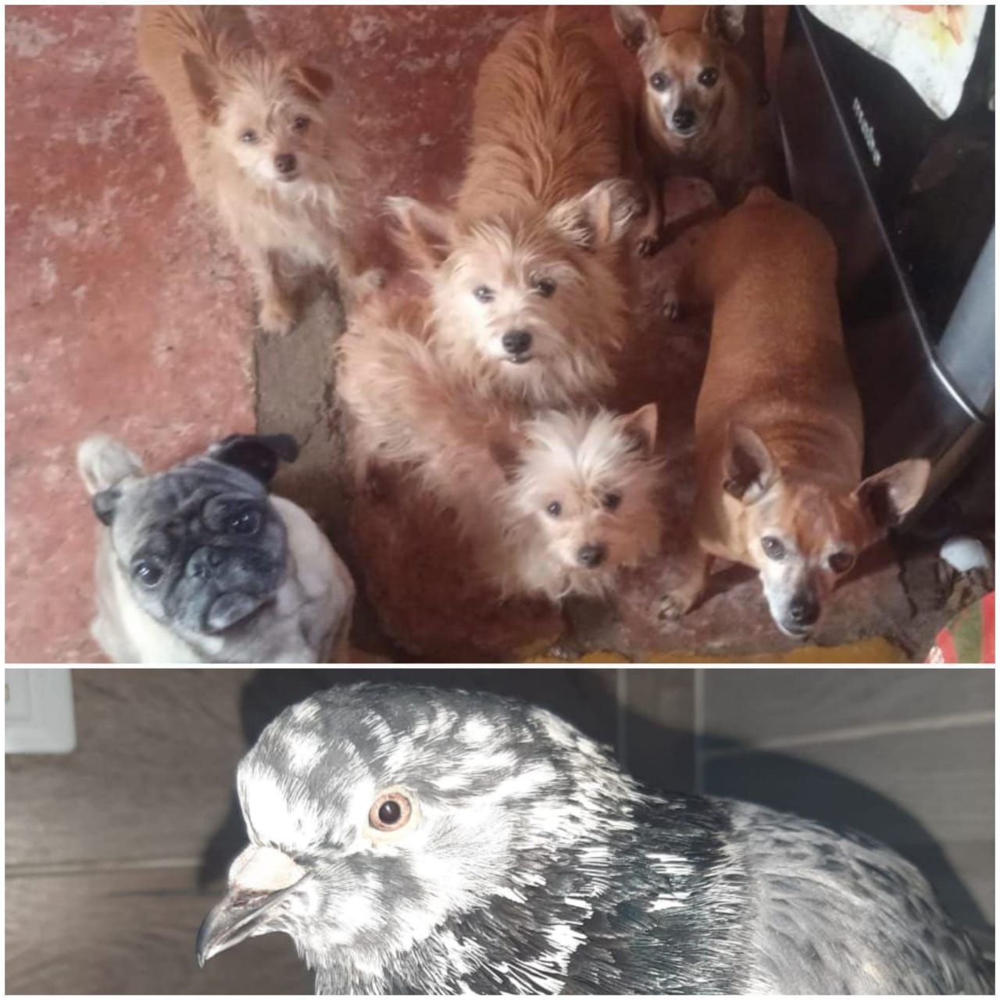

 Ellos son mis 6 mascotas,con los 3 machos tengo mas cercanía,pero, a todos los quiero y tengo gran vinculo con ellos, son buenos compañeros pero yo diría que con el que tengo mas cercania es tito, él es mi compañerito fiel, se podría decir que todo el tiempo que paso en casa tito siempre es a un lado mio.Tito y popeye son hermanos este año cumplen ya 9 años de estar con nosotros,teo es el pug, es algo cansón jajajaj es el mas activo de todos 6, este año ya va a cumplir 7 años, kiara es la perrita mas grande que tenemos en cuestión de edad, ella va a cumplir 11 años y lulu es la perrita más chiquita en tamaño, igual que teo cumplirá 7 años.falta piti que lastimosamente el año pasado falleció.
¿como nos llevamos?
Como lo dije anteriormente, yo me la llevo mas con los 3 machos ya que practicamente son con los que convivo y comparto maravillosos días.
Pacho es mi mascota de casa de papá, él tiene unos 13 años y llegó a donde mi papá cundo yo tenia 5 años, ya está viejo, pero, es grosero y entendido, tambien, es un gran compañerito y si te ve sin zapatos ja mejor arranque a correr.